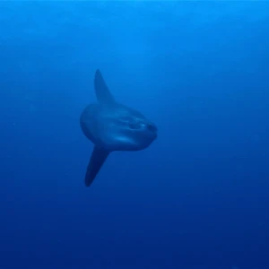
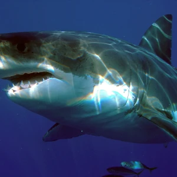
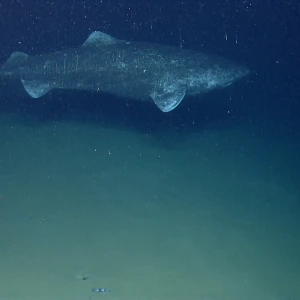

3 SPECIES
The ocean sunfish (*Mola mola*) is one of the heaviest known bony fishes, weighing up to 2,300 kg (5,070lbs). These peculiar fish are native to tropical and temperate waters worldwide and are known for their flattened body shape.
Read More
The great white shark (*Carcharodon carcharias*) is a large predatory shark found in oceans worldwide. They are known for their size, with some individuals exceeding 6 meters (20 feet) in length and weighing
Read More
The Greenland shark (*Somniosus microcephalus*) is one of the longest-living vertebrates on Earth, with some individuals estimated to be over 400 years old. They inhabit the cold, deep waters of the North Atlantic
Read More